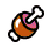
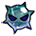

신세계 난이도 패턴
[심] VS Dr. 베가펑크 (보스)
Stage 1:
선제 행동:
힘 속성, 기 속성, 지 속성 속성의 VS 효과의 게이지를 5 단축
힘 속성, 기 속성, 지 속성 속성의 슈퍼 체인지 효과를 5 단축
힘 속성, 기 속성, 지 속성 캐릭터의 필살기 턴을 5턴 단축
도주
Stage 2:
초기 상태: Dr. 베가펑크
99턴 동안 지연 무효

99턴 동안 일반 공격 이외의 데미지 1

10턴 동안 우측 봉쇄
2턴 동안 대상의 상태 이상 중, 특정 상태 이상 턴이 1턴 감소(대상의 상태 이상: 일당의 공격력 상승, 슬롯 영향 증폭, 속성 상성 강화)
좌측의 필살기 턴을 2턴 되돌리기
좌측의 필살기 턴 고정(GOOD 2회)
격파 시 행동:

자신의 체력을 100%까지 회복
도주
Stage 3:
초기 상태: Dr. 베가펑크
99턴 동안 상태이상 무효
99턴 동안 일반 공격 이외의 데미지 1

약점 타입: 박식형
7턴 동안 10000 데미지의 화상(PERFECT 공격 시에 화상 데미지를 받음)

10턴 동안 방어력 50000배
12턴 동안 좌측 봉쇄

6턴 동안 필살기 봉쇄

3턴 동안 필살기 사용 횟수 3회 제한
[심] VS 로브 루치 (난입)
Stage 1:
선제 행동:
자유형, 야심형, 박식형 캐릭터의 VS 효과의 게이지를 5 단축
자유형, 야심형, 박식형 캐릭터의 슈퍼 체인지 효과를 5 단축
자유형, 야심형, 박식형 캐릭터의 필살기 턴을 5턴 단축
도주
Stage 2:
초기 상태: 로브 루치
99턴 동안 상태이상 무효
99턴 동안 일반 공격 이외의 데미지 1
3턴 동안 슬롯 배리어([심] 슬롯 1회)
상단의 필살기 턴을 2턴 되돌리기

상단의 [공백][힘][기][속][심][지][G][고기][연][폭탄] 슬롯을 [불리] 슬롯으로 변환
선원의 [공백][힘][기][속][심][지][G][고기][연][폭탄] 슬롯을 [속] 슬롯으로 변환
9턴 동안 상단 봉쇄
선원의 필살기 턴을 2턴 되돌리기
선원의 필살기 턴 고정(GOOD 2회)
3턴 동안 필살기 사용 횟수 3회 제한
상단슬롯 변환 불가(GOOD 2회)
격파 시 행동:
자신의 체력을 100%까지 회복
도주
Stage 3:
초기 상태: 로브 루치
99턴 동안 상태이상 무효
99턴 동안 일반 공격 이외의 데미지 1
약점 타입: 박식형
5턴 동안 1000을(를) 넘는 데미지를 90% 감소

5턴 동안 받는 데미지를 90% 감소

[공백][힘][기][속][심][지][G][고기][연][폭탄] 슬롯을 [방해] 슬롯으로 변환
10턴 동안 하단 봉쇄
7턴 동안 상단 필살기 봉쇄

3턴 동안 중간단을(를) 날려버리기